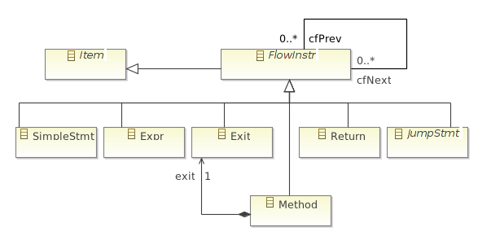
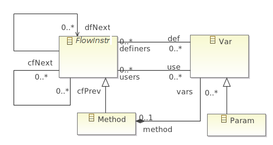

public class Test1 { public static void testMethod(int a) { int i = a * 2; i = i + 19; while (i > a) { if (a < 1) { return; } else if (a == 1) { break; } i--; } } }


cfNext: "testMethod()" --> "int a = 1;" cfNext: "int a = 1;" --> "int b = 2;" cfNext: "int b = 2;" --> "int c = a + b;" cfNext: "int c = a + b;" --> "a = c;" cfNext: "a = c;" --> "b = a;" cfNext: "b = a;" --> "c = a / b;" cfNext: "c = a / b;" --> "b = a - b;" cfNext: "b = a - b;" --> "return b * c;" cfNext: "return b * c;" --> "Exit" dfNext: "int a = 1;" --> "int c = a + b;" dfNext: "int b = 2;" --> "int c = a + b;" dfNext: "int c = a + b;" --> "a = c;" dfNext: "a = c;" --> "b = a;" dfNext: "a = c;" --> "c = a / b;" dfNext: "a = c;" --> "b = a - b;" dfNext: "b = a;" --> "c = a / b;" dfNext: "b = a;" --> "b = a - b;" dfNext: "c = a / b;" --> "return b * c;" dfNext: "b = a - b;" --> "return b * c;"